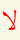
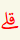
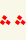
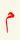

| تُفِيدُ لزُومَ الوَقْف | |
|  | تُفِيدُ النَّهْيَ عَن الوَقْف |
| تُفِيدُ بأنَّ الوَصْلَ أَوْلىٰ مَعَ جَوَاز الوَقْفِ | |
|  | تُفِيدُ بأنَّ الوَقْفَ أَوْلىٰ |
| تُفِيدُ جَوَازَ الوَقْفِ | |
|  | تُفِيدُ جَوَازَ الوَقْفِ بأَحَدِ المَوْضِيعَيْن وَ لَيسَ كِلَيْهِمَا |
| للدِّلَالَةِ عَلىٰ زيَادَةِ الحَرْف وَعَدَم النُّطق بهِ | |
| للدِّلَالَةِ عَلىٰ زيَادَةِ الحَرْف حِينَ الوَصْل | |
| للدِّلَالَةِ عَلىٰ سُكُونِ الحَرْف وَ وُجُوبِ النُّطق بهِ | |
|  | للدِّلَالَةِ عَلىٰ وُجُود الإِقلَابِ |
| للدِّلَالَةِ عَلىٰ إظْهَار التَّنْوين | |
 |
للدِّلَالَةِ عَلىٰ الإدغَام وَ الإخْفَاءِ |
| للدِّلَالَةِ عَلىٰ وُجُوبِ النُّطق بالحُروفِ المترُوكَةِ | |
| للدِّلَالَةِ عَلىٰ وُجُوبِ النُّطق بالسِّين بَدَل الصَّاد. وَ إذَا وُضعَتْ بالأَسْفَل فالنُّطقُ بالصَّادِ أَشهَر |
|
| للدِّلَالَةِ عَلىٰ لزُوم المَدِّ الزّائِد |  |
للدِّلَالَةِ عَلىٰ مَوْضعِ السُّجُود , أمَّا كلِمَة وُجُوبِ السُّجُود فَقَدْ وُضعَ فَوْقَهَا خَطّ |
| للدِّلَالَةِ عَلىٰ بدَايةِ الأَجْزَاء وَ الأَحْزَاب وَ أنصَافِهَا وَ أَربَاعِهَا | |
| للدِّلَالَةِ عَلىٰ نِهَايَةِ الآيَةِ وَ رَقَمِهَا |